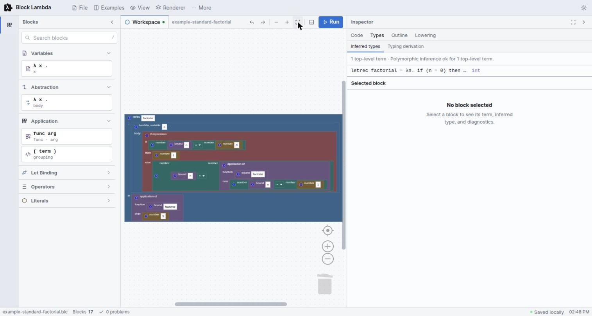
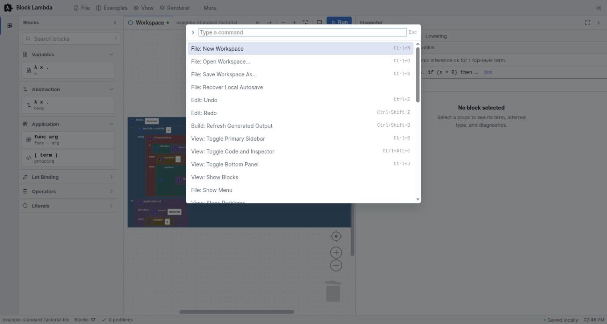

A workbench for the Lambda Calculus
Block Lambda turns λ-calculus from something you write on paper into something you can assemble, type-check, reduce by hand, and watch compile all the way down to WebAssembly — without leaving the browser.
What B-Lambda is
The core idea is that one program should be visible at every level of abstraction at once. You build a term out of blocks; B-Lambda simultaneously shows you its generated text, its inferred type, its typing derivation, its reduction sequence, its abstract-machine trace, and the nine intermediate representations a compiler would put it through. Change a block and every one of those views follows.

int.Three things make it more than a block editor:
- Three independent reference semantics. A substitution stepper, a CSEK abstract machine, and a register VM evaluate the same term separately, and the Lockstep view checks that they agree step for step.
- A real compiler, not a pretty-printer. Nine lowering stages end in bytecode and in a genuine WebAssembly module you can execute in the page — each stage cross-checked against the reference semantics.
- Types you can read as shapes and colours. Hindley-Milner inference runs on every edit, and the results appear on the blocks themselves as well as in the Inspector.
B-Lambda is one of the languages built at L-Workshop. It shares its Call-by-Structure evaluation strategy and its Lockstep correspondence view with MnL, and its bottom-panel layout with B-MJ. If you know one, the other two will feel familiar.
The workbench
The shell is a docked workbench rather than a single canvas. Five regions, all of which can be hidden:
| Region | What lives there | Toggle |
|---|---|---|
| Header menus | File, Examples, View, Renderer, More | — |
| Blocks sidebar | Searchable, categorised toolbox | Ctrl + B |
| Workspace | The blocks themselves, with zoom and Run | — |
| Inspector | Code, Types, Outline, Lowering | Ctrl + Alt + C |
| Bottom panel | Problems, Output, Semantics | Ctrl + J |
| Status bar | File name, block count, problem count, autosave, perspective | — |
The Inspector's four tabs are the heart of it. Code is an editable text view of the program that syncs both ways; Types holds the inferred types and the typing derivation; Outline shows the program structure as a tree; and Lowering is the compiler pipeline.
Renderers
B-Lambda ships three Blockly renderers, switchable live from the Renderer menu:
- Tude — the project's own renderer. Square corners, so blocks read as rectangular fragments of program text rather than as jigsaw pieces. This is the default and what every figure in this help uses.
- Zelos — Blockly's rounded renderer.
- Thrasos — Blockly's classic renderer.
Perspectives
A perspective is a saved arrangement of those regions. Pick one from View, from the command palette, or from the picker at the right of the status bar.
| Perspective | Arranged for |
|---|---|
| Edit | Building a term: blocks, workspace, code |
| Debug | Stepping: the Semantics dock takes the space |
| Type Analysis | Diagnostics: inferred types, derivation, problems |
| Presentation F11 | Teaching: a maximised workspace. Closing it restores the previous layout. |
| Custom | Not a preset — what you get the moment you move a panel by hand |
Dragging a panel switches the status bar to Custom rather than leaving a preset name on a layout that no longer matches it. Your layout, theme, renderer, autosave interval and active tabs are all restored next visit.
Command palette
Press Ctrl + Shift + P for every command in one searchable list. Commands are prefixed by area — File, Edit, Build, View, Run, Perspective, Preferences, Workspace, Code — so typing the prefix narrows to a group.

The full list is in the reference chapter.
Files and autosave
Workspaces save as .blc files. Nothing is uploaded — save and open are ordinary
browser file operations, and the IDE also keeps a rolling backup in local storage.
- Save As… Ctrl + S writes a
.blcfile to disk. - Open… Ctrl + O loads one back.
- Recover Autosave restores the local backup after a crash or a closed tab. The status bar shows Autosave pending and then Saved locally with a timestamp, so you can see whether there is anything to recover.
Built-in examples
The Examples menu carries twelve worked programs. They are ordered roughly by difficulty and each one is chosen to isolate a single idea — several exist specifically to make a semantic distinction visible.
| Example | Shows | Result |
|---|---|---|
| Identity Function | λx. x, the polymorphic identity |
'a -> 'a |
| Currying & Closures | add 1 captures x |
42 |
| Function Composition | compose f g 5 |
16 |
| Apply Twice | f (f x) |
11 |
| Twice Twice | twice applied to itself |
4 |
| Let-Polymorphism | id used at bool and int |
42 |
| Copy vs Lookup | the Call-by-Structure ↔ Call-by-Value contrast | 42 |
| Shadowing | the inner binder wins | 11 |
| Normal Form | no reduction under a binder | — |
| Factorial 5 | linear recursion via letrec |
120 |
| Fibonacci 6 | tree recursion | 8 |
| GCD (Euclid) | mod built from integer ÷ |
6 |
If the workspace already has blocks, loading an example asks first, and offers Replace or Merge — merge drops the example alongside what you already have instead of discarding it. Cancel leaves everything untouched.
Two of these earn their place by contradiction rather than by computing something. Copy vs Lookup is the fastest way to see why the two evaluation strategies are genuinely different, and Normal Form exists to show you a term that refuses to reduce further. Both are covered in Semantics.